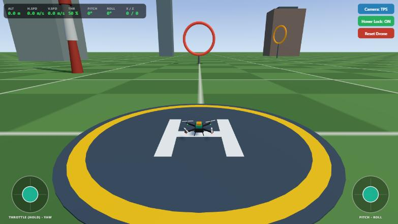
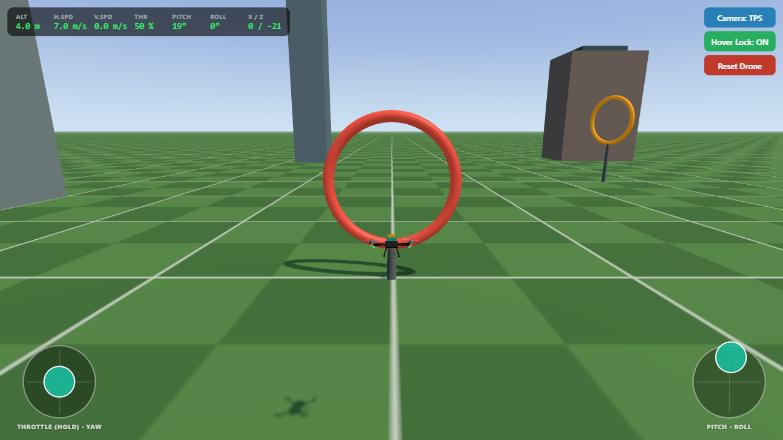
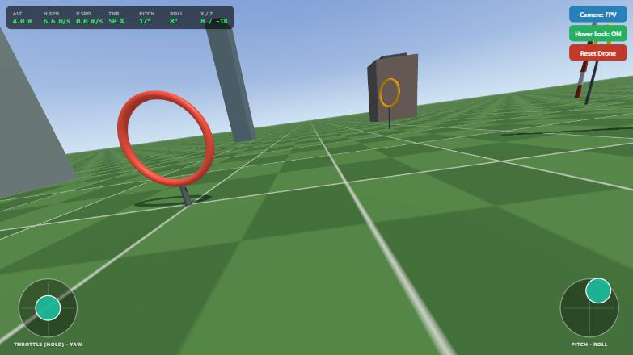

physics.ts), model 3D dronaScene.tsx / Scene.web.tsxcameraRig.ts)package.json)Expo ~58.0.0 • React Native 0.88.0 • React 19.3.0 • Three.js ~0.175.0 • expo-gl ~58.0.3 • Zustand ~5.0.0 • react-native-web ^0.21.4 • TypeScript ~5.8.0
ec26f09)
Czysty Three.js + Zustand (bez React Three Fiber)
| Obszar | Etap 1 | Etapy 2–5 |
|---|---|---|
| Dynamika | 1D: wysokość + prędkość pionowa | 6-DOF: pozycja 3D, pochylenie, przechylenie, odchylenie |
| Sterowanie | Przyciski −10 %, +10 %, Hover, Cut Off | Dwa wirtualne joysticki (Mode 2) + Hover Lock |
| Kod sceny | Scene.tsx (226 l.) i Scene.web.tsx (233 l.) z powielonym kodem | Wspólne src/core/; Scene.tsx 147 l., Scene.web.tsx 95 l. |
| Model drona | DroneCube.tsx (kostka) | Proceduralny quadkopter z wirującymi śmigłami |
| Kamera | Lerp wysokości, stała pozycja X/Z | TPS (za dronem, wg odchylenia) i FPV |
| Zależności | R3F: @react-three/fiber | Usunięto R3F, CameraController, CrossCanvas*, DroneCube |
Orientacja (app.json) | portrait | landscape |
ec26f0912 plików zmienionych: +259 / −752 linii (w tym package-lock.json: +3 / −170)
8 plików (7 w src/core/ + VirtualJoystick.tsx): +1201 linii
4 pliki: CameraController, CrossCanvas, CrossCanvas.web, DroneCube
Zmiany nie są jeszcze zacommitowane — porównanie drzewa roboczego z ec26f09.
core/physics.ts — model lotu 6-DOF (151 l.)core/droneModel.ts — model 3D i śmigła (159 l.)core/environment.ts — środowisko (326 l.)core/disposeScene.ts (34 l.)Scene.tsx (147 l.), Scene.web.tsx (95 l.)VirtualJoystick.tsx — dwa joysticki (274 l.)HUD.tsx — telemetria i przyciski (139 l.)store/useDroneStore.ts — Zustand (98 l.)core/cameraRig.ts — TPS/FPV (72 l.)core/constants.ts (71 l.) — wszystkie parametry symulacji w jednym miejscucore/simulation.ts (114 l.) — wspólna konfiguracja sceny i aktualizacja klatki, łączy moduły obu autorówApp.tsx (63 l.) — punkt wejścia (nagłówek opisuje podział ról)Podział „50/50" dotyczy zakresu odpowiedzialności (silnik/fizyka/świat vs. interakcja/stan/kamera), nie liczby linii. Atrybucja pochodzi z komentarzy w plikach — historia git zawiera tylko jeden commit (Etap 1).
physics.ts
Wygładzanie wykładnicze do zadanej wartości (niezależne od liczby klatek):
$u_p,u_r,u_y\in[-1,1]$ • $\theta_{\max}=30^\circ$ • $k=6\ \mathrm{s^{-1}}$ • $\omega_\psi=120^\circ/\mathrm{s}$. Na ziemi bez ciągu (restingOnGround) wszystko jest zerowane.
$T\in[0,1]$, $T_{\max}=19.62$, $g=9.81\ \mathrm{m/s^2}$ → przy $T=0.5$ zawis ($a_y=0$).
Hover Lock aktywny i drążek w środku ($|T-0.5|<0.01$): tłumienie prędkości pionowej
Brak dolnego limitu prędkości opadania; krok czasu przycięty do $\Delta t\le 0{,}05\ \mathrm{s}$.
physics.ts, constants.ts
Przód $=(-\sin\psi,0,-\cos\psi)$, prawo $=(\cos\psi,0,-\sin\psi)$, opór liniowy $c=0.7\ \mathrm{s^{-1}}$. Całkowanie jawne Eulera: $v\leftarrow v+a\Delta t$, $p\leftarrow p+v\Delta t$.
| Stała | Wartość | Znaczenie |
|---|---|---|
GRAVITY | 9,81 m/s² | grawitacja |
MAX_THRUST | 19,62 m/s² | ciąg przy T=1 (2·g) |
MAX_TILT | 30° | maks. pochylenie/przechylenie |
TILT_RESPONSE | 6 s⁻¹ | szybkość śledzenia kąta |
YAW_RATE | 120°/s | prędkość odchylania |
HORIZONTAL_ACCEL_GAIN | 1,5 | mnożnik g·tan(kąt) |
DRAG | 0,7 s⁻¹ | opór powietrza |
MAX_HORIZONTAL_SPEED | 15 m/s | limit prędkości poziomej |
MAX_CLIMB_SPEED | 15 m/s | limit wznoszenia |
HOVER_DAMPING | 10 s⁻¹ | tłumienie w Hover Lock |
GROUND_Y / MAX_ALTITUDE | 0,2 / 500 m | poziom gruntu / pułap |
MAX_DT | 0,05 s | maks. krok fizyki |
droneModel.ts
Hierarchia jest płaska: ramiona, silniki i LED-y to bezpośrednie dzieci grupy; zagnieżdżone są tylko łopaty w rotor.
$\omega_0=8$, $\omega_1=60\ \mathrm{rad/s}$; $s_i=\pm1$ naprzemiennie (pary diagonalne wirują w tym samym kierunku).
MeshStandardMaterial, bez własnych shaderówpropellers[]).glb)environment.ts
Fog: początek 250 m, koniec 1600 m; tarcza słońcaHemisphereLight (1,3) + DirectionalLight (2,4), światło podąża za dronemDataTexture 64×64, szachownica 5 m, linie co 10 mweb cienie (PCFSoft, mapa 2048², zasięg ±40 m) i anizotropia tekstury • native cienie wyłączone (ENABLE_SHADOWS_NATIVE = false)
| Bramka | x | z | y | Kolor |
|---|---|---|---|---|
| 1 | 0 | −30 | 4 | czerwony |
| 2 | 25 | −60 | 7 | pomarańczowy |
| 3 | 60 | −55 | 10 | żółty |
| 4 | 75 | −20 | 6 | zielony |
| 5 | 50 | 10 | 9 | niebieski |
| 6 | 20 | 15 | 5 | fioletowy |
VirtualJoystick.tsx
$\mathbf p_0$ — punkt początku dotyku, $\mathbf b$ — wychylenie gałki na starcie (dla drążka gazu bez Hover Lock), $R=60$ px (promień podstawy), gałka 26 px. Wychylenie liczone względem punktu dotknięcia, nie środka podstawy. Martwa strefa 5 % jest odejmowana i przeskalowana z powrotem do ±1.
| Drążek | Oś | Wielkość |
|---|---|---|
| Lewy | pion ($n'_y$) | ciąg $T=0.5+0.5\,n'_y$ ∈ [0, 1] |
| poziom ($n'_x$) | odchylenie $u_y=n'_x$ | |
| Prawy | pion ($n'_y$) | pochylenie $u_p=n'_y$ (+ = do przodu) |
| poziom ($n'_x$) | przechylenie $u_r=n'_x$ (+ = w prawo) |
Animated.spring (friction 6, tension 120)HUD.tsx, useDroneStore.ts
PanResponder nad dolnym paskiem kieruje każdy dotyk (wg identifier) do drążka po tej stronie ekranu, gdzie się zaczął (pageX < width/2)setLeftStick, setRightStick, z clamp); pętla czyta getState() — bez subskrypcjiupdateTelemetry z częstotliwością 15 Hz; useShallow ogranicza re-renderyresetNonce zwiększany w store, pętla wykrywa zmianęcameraRig.ts
Przy 60 FPS współczynnik ≈ 0,08. Obrót tylko wokół osi Y — pochylenie i przechylenie nie bujają kamerą. Dodatkowo $c^{*}_y\ge 0.7$ m (nad ziemią).
TPS_OFFSET = (0, 1.8, 4.5) m w układzie odchyleniaTPS_FOLLOW = 5 s⁻¹ — wygładzanie niezależne od FPSenv.update(dt, focus, camera.position)), niezależnie od trybucameraRig.ts
Dlaczego YXZ: najpierw odchylenie wokół pionu świata, potem pochylenie wokół lokalnego X, na końcu przechylenie wokół osi „do przodu". Ta sama kolejność jest użyta dla modelu (simulation.ts), więc kamera dokładnie odtwarza postawę drona, a horyzont przechyla się poprawnie. Bez wygładzania, FOV 85°, near 0,05.
| TPS | FPV | |
|---|---|---|
| Pozycja | za i nad dronem, obrót wg ψ | nos drona (0, 0.03, −0.34) |
| Orientacja | lookAt na dron (+0,4 m) | Euler (−θ, ψ, −φ), YXZ |
| Wygładzanie | tak, 1−e−5Δt | brak |
| FOV / near | 60° / 0,1 | 85° / 0,05 |
| Przechylenie obrazu | nie | tak (horyzont się przechyla) |

Widok TPS — dron na lądowisku z nowym interfejsem dwóch joysticków.

Lot z przechyleniem (Pitch/Roll) przez bramki kontrolne i animacja śmigieł.

Tryb FPV (widok z kamery drona) podczas przelotu przez tor przeszkód.
| Problem | Rozwiązanie w kodzie |
|---|---|
| Dwa renderery (web / expo-gl) z powielonym kodem | core/simulation.ts — wspólna scena i step(dt); Scene*.tsx tylko tworzą renderer i pętlę |
| Ograniczenia expo-gl | Materiały wbudowane i DataTexture zamiast własnych shaderów; cienie wyłączone natywnie; łatki getShaderInfoLog; rozmiar z onLayout (bufor GL stały) |
| Jeden responder w React Native | Jeden PanResponder i routing dotyków po identifier do lewego/prawego drążka |
| Aktualizacje store co klatkę vs. re-rendery HUD | Pętla czyta getState(); telemetria 15 Hz; useShallow w HUD |
| Kolejność obrotów w FPV i zależność od FPS | Euler YXZ z ujemnymi kątami (konwencja w physics.ts); wygładzanie 1−e^(−k·dt); dt ≤ 0,05 |
.glb z planu Etapu 1src/core/ dla web i nativeDanylo Mikhnytskyi (284125): fizyka, model 3D, środowisko, renderery.
Maksym Mahaz (284115): joysticki, HUD, store, kamery.
Wspólnie: stałe, simulation.ts, integracja.
Danylo Mikhnytskyi (284125) • Maksym Mahaz (284115) • Grafika Komputerowa i GUI